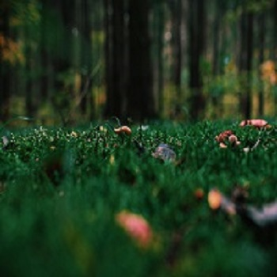
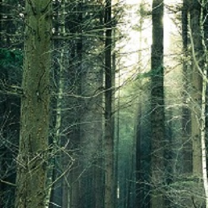

Cultural Significance of Medicinal Plants in Indigenous Traditions
The Healing Wisdom of Nature. Medicinal plants have long played a crucial role in the health and well-being of indigenous...

Exploring Sustainable Practices for Forest Conservation
Preserving Nature for Future Generations. In a world facing environmental challenges, sustainable practices for forest conservation...

The Vital Role of Forest Resources in Our Economy
Discovering Nature's Wealth. Forests are essential to our economy, providing resources like timber, paper, and other raw materials...